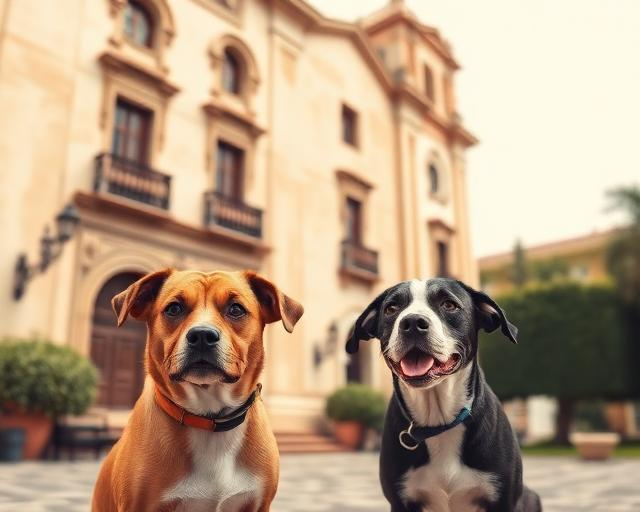
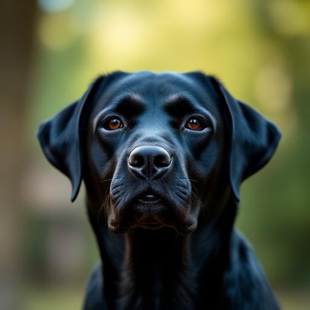
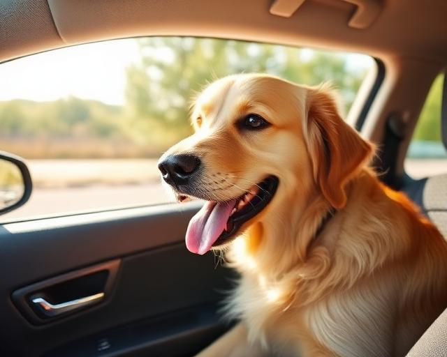
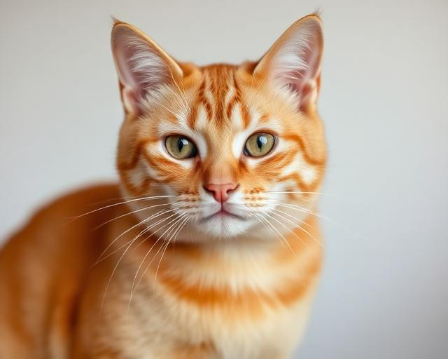
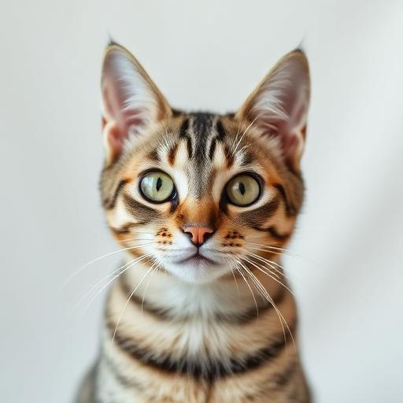

Ley de Bienestar Animal: todo lo que debes saber en 2025
Registro obligatorio, PPP, seguro de responsabilidad civil... Te explicamos todo lo que exige la ley y cómo cumplirla sin complicaciones.
Leer más
Ley y NormativaRegistro obligatorio, PPP, seguro de responsabilidad civil... Te explicamos todo lo que exige la ley y cómo cumplirla sin complicaciones.
Leer más
SaludUna de las enfermedades más comunes en España con cobertura incluida en KIVO CARE+. Aprende a detectarla a tiempo.
Leer más
CuidadosArnés homologado, pausas cada 2 horas y trucos para que el viaje sea tranquilo tanto para él como para ti.
Leer más
SaludUna visita de urgencias puede costar más de 1.000 €. Con KIVO, el 80–100% corre a cargo del seguro. Descúbrelo.
Leer más"El reembolso fue súper rápido. En 48h ya tenía el dinero en mi cuenta. Thor tuvo un accidente y KIVO lo cubrió todo sin complicaciones."

"Mi gata Mila necesitó una operación de urgencia. Con KIVO PREMIUM, el 100% del coste quedó cubierto. No sé qué haría sin este seguro."
"Desde el primer mes con KIVO me quedé tranquila. Nube tuvo leishmaniosis y el proceso fue clarísimo. Recomiendo KIVO a toda persona que tenga mascota."